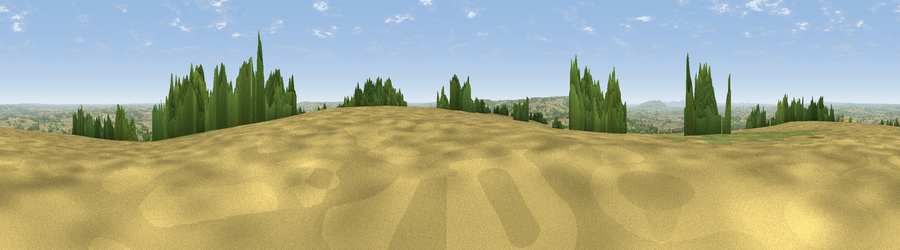

Viewpoint near Ilmington
#6723 in England · top 11% of its area beats it · near IlmingtonWhere it is
The exact computed spot (SP 18700 42738). Click the marker for map links.
The view, rendered

A 360° render of this exact spot computed from the terrain model, tree cover and land cover — summer colours, afternoon light, calibrated against photographs of famous viewpoints. Real trees, hedges and buildings will differ in detail.
The panorama
Grey silhouette: terrain skyline in each direction (720 bearings, Earth curvature and refraction included). Dashed green: skyline with trees (+15 m) and buildings (+8 m) as obstacles. Blue strip: how far the ground is visible on each bearing.
Where the view opens
Wedge length = distance to the farthest visible ground on that bearing (vegetation-aware). Rings at 10, 25 and 50 km.
What fills the view
49% cropland · 32% grassland · 16% woodland · 3% built-up
Angular shares of the visible panorama (visual magnitude), not map area. Landscape diversity 0.48 (0–1 Shannon).
Key numbers
More beautiful places nearby
The staircase of upgrades: each row has a higher view potential than everything closer. Driving times are estimates from straight-line distance, calibrated against real road routing — check an actual route before setting out.
| Place | Direction | Drive | Score |
|---|---|---|---|
| Viewpoint near Ilmington | E · 2 km | ~5 min | 72.6 |
| Viewpoint near Meon Vale | NNW · 3 km | ~7 min | 77.0 |
| Broadway Hill | SW · 10 km | ~19 min | 77.7 |
| Viewpoint near Elmley Castle | W · 21 km | ~36 min | 80.5 |
| Bredon Hill | W · 23 km | ~38 min | 83.0 |
| Summer Hill | W · 42 km | ~61 min | 85.4 |
| Worcestershire Beacon | W · 42 km | ~61 min | 87.1 |
| Viewpoint near West Quantoxhead | SW · 146 km | ~169 min | 87.9 |
52.08268, -1.72852 · source: screening · position refined by local search. Computed location — check access rights before visiting.